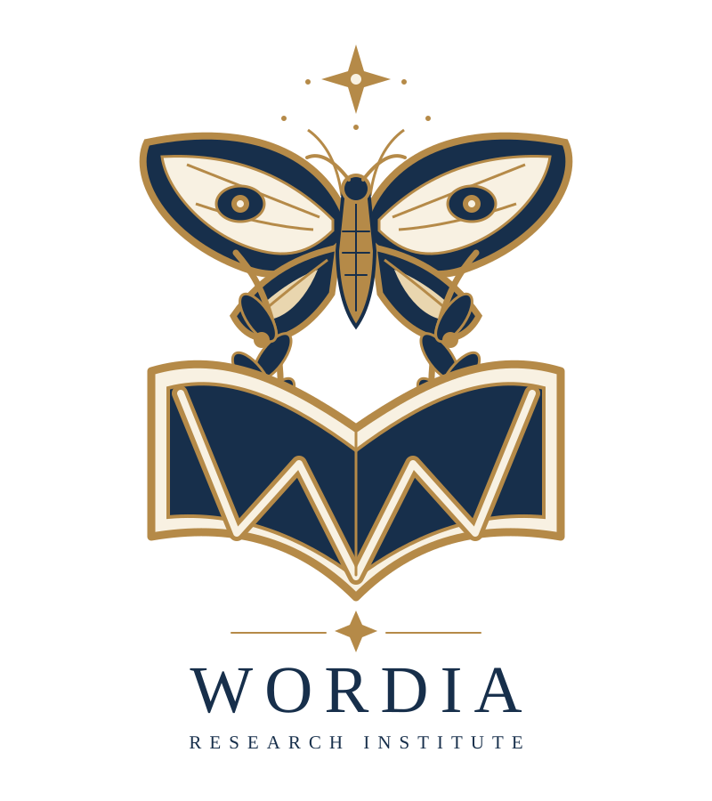

RESEARCH 01
住人形態・分類研究
品詞に対応する種族、複合的な性質、姿の変化を調べます。

WORDIA研究所は、言葉が住人として暮らす世界の構造・歴史・文化を調査し、観察記録を公開しています。
WORDIAは、言葉が独自の姿と社会を持って暮らす世界です。研究所は、この世界を創造するのではなく、すでに存在する世界を発見し、観察・記録することを目的としています。未知の地域や住人、解明されていない法則も数多く残されています。
| 機関名 | WORDIA研究所（WORDIA Research Institute） |
|---|---|
| 研究対象 | 言語世界の住人、文法構造、語源・歴史、言語間交流 |
| 活動内容 | 住人観察、資料編纂、研究報告、物語記録 |
| 活動状況 | 調査継続中 |
品詞に対応する種族、複合的な性質、姿の変化を調べます。
文中で担う役割と、言語ごとに異なる社会の仕組みを調べます。
言葉の祖先、派生、意味の変遷と関係性を記録します。
翻訳、借用語、人工言語など、言語世界間の関係を調べます。
観察された住人の記録を整理しています。現時点の外見資料は暫定的なものを含みます。
研究成果は調査の進展に応じて順次公開します。未公開の内容には「制作中」「整理中」と記載しています。
品詞の種族、文の構造、住人の系譜を中心に調査しています。
英語世界と異なる文法・社会構造について調査構想を進めています。
計画的に成立した言語世界の歴史と発展を研究対象としています。
翻訳による往来や借用語の移動など、未解明の現象を扱います。
WORDIA研究所では、世界の観察記録、住人の肖像、研究報告、物語など、さまざまな形での参加を構想しています。参加方法や投稿基準は今後整備します。